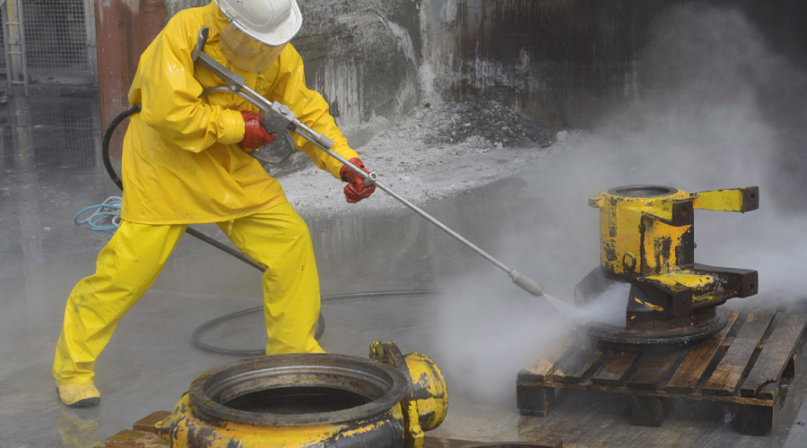

Аренда установок гидроструйной очистки и промывки
Аренда водоструйного аппарата и промышленной установки для гидроструйной очистки с насосом и рабочей головкой позволит вам использовать технику длительное время, не неся затрат на ее содержание и обслуживание. Услуга аренды выгодна предприятиям, у которых потребность в очистке и промывке резервуаров возникает постоянно, поэтому наличие установки в своем распоряжении становится необходимостью.

Возможности аренды водоструйного аппарата и оборудования
Получение гидроструйной установки с аппаратами очистки, головками и насосной установкой позволит вам организовать работы по наиболее эффективной схеме, привлекая технику в любое время по необходимости, без ожидания ее прибытия и согласования заявки.
Дополнительные преимущества аренды:
- Вы не приобретаете дорогую установку, стоимость которой составляет не менее 500 тысяч евро, но получаете возможность использовать ее длительное время по своему графику работ;
- Вы не несете затрат на обслуживание насосов, головок, шлангов, ремонт техники;
- Вы не несете затрат на страхование техники, прохождение техосмотров, организацию проверок установки в Ростехнадзоре;
- Оператор установки не вводится в штат вашей компании, все работы по обслуживанию машины продолжает выполнять собственник — наша компания.
Наше предложение создает преимущества предприятиям и компаниям, располагающим резервуарными парками, промышленными теплообменниками, трубопроводами и коллекторами, для которых обязательная регулярная чистка и промывка. Гидроструйная установка в вашем распоряжении позволит организовать работу по собственному графику. От арендатора требуется создание условий для безопасного труда и отдыха экипажа установки и предоставление доступа нашим специалистам для проведения техобслуживания.
Какие гидроструйные установки можно взять в аренду
Водоструйные установки и аппараты в аренду могут быть переданы в ваше распоряжение в разном составе и комплектации в зависимости от условий использования. Эксплуатация нашим оператором входит в условия предоставления услуги.
В нашем распоряжении имеются машины и оборудование для водоструйной очистки с рабочим давлением 2800 и 1600 бар. Здесь вы можете оставить заявку на аренду и получить консультацию наших специалистов по подбору оборудования по оптимальной стоимости и функциональности для решения ваших задач. Расчет стоимости аренды включает транспортировку установки до места передачи заказчику. Услуга оформляется договором.